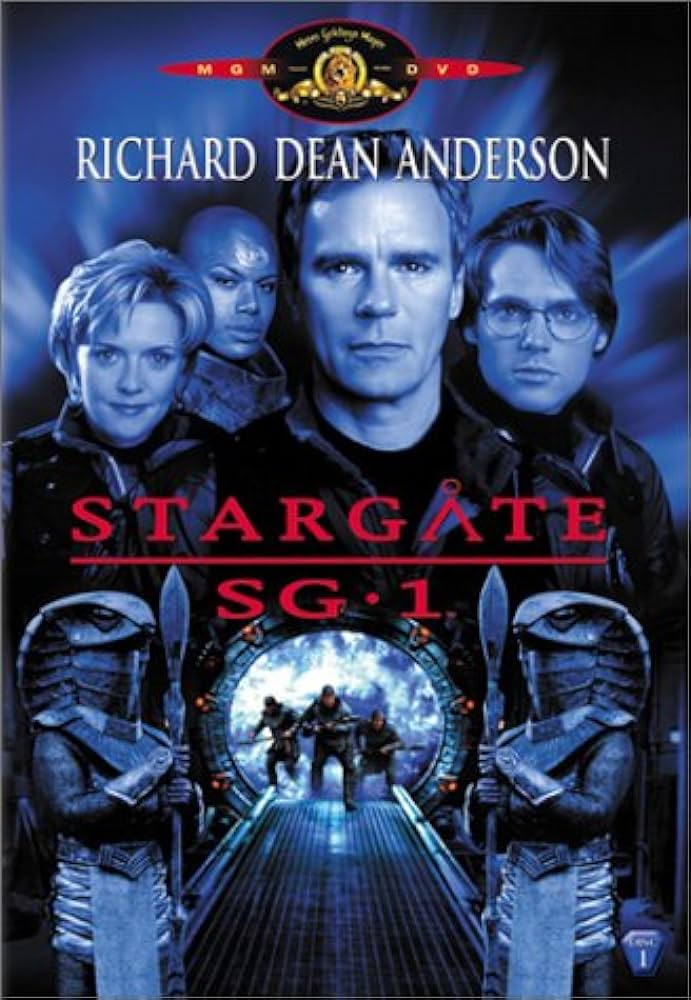
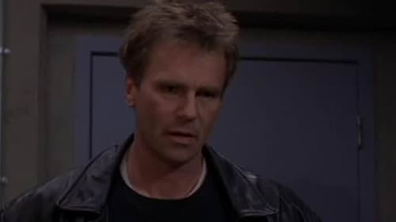
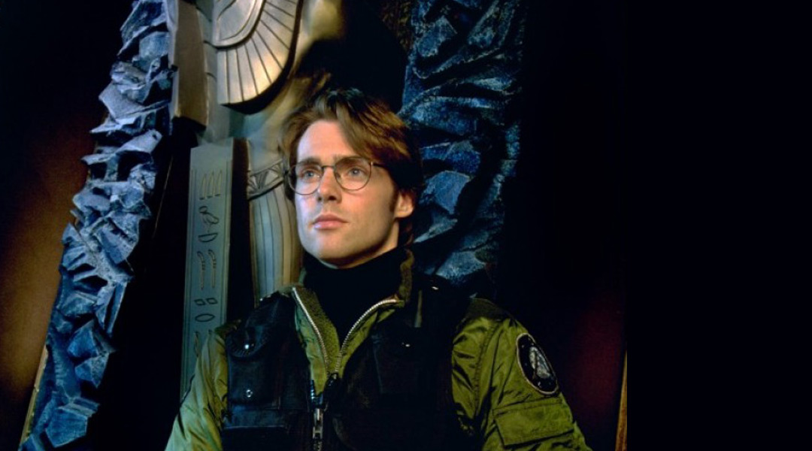
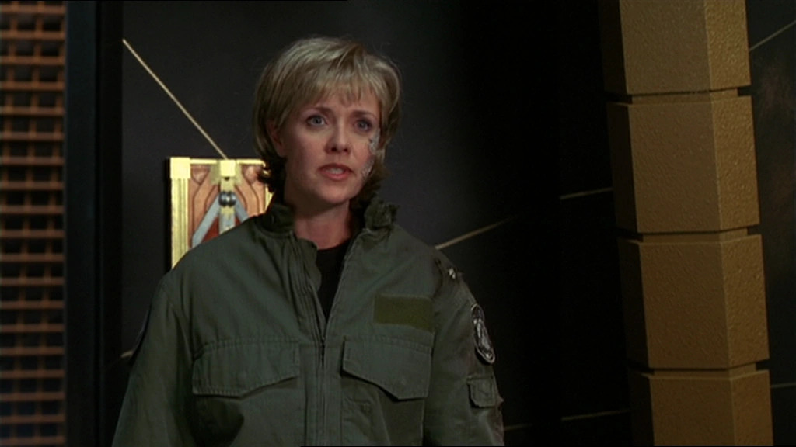

"Stargate SG-1" rockets you into military sci-fi territory, where a squad of unique characters battles a straight-up evil enemy. But here's the twist – it ties alien races to Earth's own mythologies using the wild Stargate portal. It's like ancient legends meeting high-tech space wars!
CharactersJack O'Neill Played by: Richard Dean Anderson Daniel Jackson  Played by: Michael Shanks Samantha Carter  Played by: Amanda Tapping |